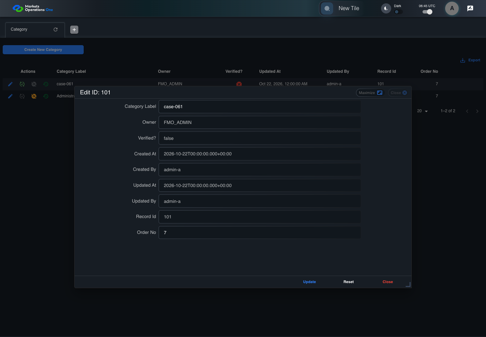

BFF-ADM-061 current BFF administration through actual UI
PASS · application/run-072/bff-adm-061-current-bff-administration-through-actual-ui-97d4cefc10ee-attempt-1 · ACTUAL_APPLICATION_LOCAL_SERVICES
Actual current React and exact-current BFF admin controllers/services/JPA with actual migration DDL in disposable PostgreSQL. Controlled OUD/EMS2 identities and local Spring bootstrap. Fixture SQL seeds/mutates isolated records; service errors are actual database errors. Undefined agreed messages remain unresolved acceptance.
2026-10-22T06:45:19.449Z to 2026-10-22T06:45:25.056Z
Assertions and result · Artifact manifest · Exact run inputs and source hashes
Result SHA-256:2b880cc3edafa601bda4f0de53e44ba1e6ac50ec977cea9e0c3ac7b5c6b3139aMachine observations
- actual-identity-projection.json
a004421ce8f5f4bb7ded1b0aeaf8cf8bceeb1c132fce57d3cefca16349cb897d - baseline-inputs.json
b21af42e4dfa1004167b94deac494cf1a7273731dcd77340261441984f2c739f - bff-boundary.json
201904de90865c1a4866f1bee03deb5515c8b03931d4d95be6f2859e4e013390 - committed-ui-submission-comparisons.json
7edf83894e8816943f0d0d096bfaa15a52ecfe4415ab3649f98c3927746312e2 - fixture-step-4.json
b1a8acfe503d34354ad77cfac4bf7da048b81f1a67e60d1550a9db44ef28786b - initial-persisted-records.json
e2883aab89b3819ca93081ae95476cc12d068c0f8a81da8a60f833542986f501 - persisted-after-submit.json
55a17ad67bf0eee8888bd171af2523a493d254edd8cb1ac6705151d4a9091010 - ui-origin-bff-requests.json
fa33db5371f115fa79a614f7fdb3b297a5ffb304dd95ef8e7d387d48d07a5853
Screenshot capture: CAPTURED. Named frames: 12.
Step screenshot bindings: COMPLETE. 11/11 canonical steps have execution screenshots.
Bindings measure structural coverage only. They do not establish screenshot content quality or relevance.
Screenshot content review: NOT_REVIEWED. Recorded context: 0/12 frames. Identical image bytes: 7 repeated frames. Recorded context does not establish human visual review.
Canonical step timeline
Given Admin A uses subject "admin-a" with role "FMO_ADMIN" in an isolated authenticated browser
Execution: PASSED.1. step-01 Visible state after step 1: Given Admin A uses subject "admin-a" with role "FMO_ADMIN" in an isolated authenticated browser
2026-10-22T06:45:22.340Z · 1440×1000
Step: /Users/lushevol/code/github/ratan-release-impact/workbench/tasks/ui-test-coverage-20261022/test-cases.md:17298
SHA-256:45f51bbf321fec3797e60353d6350dbed6fc5735b91ba1039b0ff587c9da9e0dAnd the controlled Category fixture records the initial grid rows and persisted values
Execution: PASSED.
2. step-02 Visible state after step 2: And the controlled Category fixture records the initial grid rows and persisted values
2026-10-22T06:45:22.498Z · 1440×1000
Step: /Users/lushevol/code/github/ratan-release-impact/workbench/tasks/ui-test-coverage-20261022/test-cases.md:17299
SHA-256:45f51bbf321fec3797e60353d6350dbed6fc5735b91ba1039b0ff587c9da9e0dImage bytes match frame 1. An unchanged image can be valid for consecutive assertions. This match does not establish correct step content.
And the Category grid has record "101" owned by "FMO_ADMIN"
Execution: PASSED.
3. step-03 Visible state after step 3: And the Category grid has record "101" owned by "FMO_ADMIN"
2026-10-22T06:45:22.681Z · 1440×1000
Step: /Users/lushevol/code/github/ratan-release-impact/workbench/tasks/ui-test-coverage-20261022/test-cases.md:17300
SHA-256:45f51bbf321fec3797e60353d6350dbed6fc5735b91ba1039b0ff587c9da9e0dImage bytes match frame 2. An unchanged image can be valid for consecutive assertions. This match does not establish correct step content.
And the baseline fixture data defines "Category Label" as "case-061"
Execution: PASSED.
4. step-04 Visible state after step 4: And the baseline fixture data defines "Category Label" as "case-061"
2026-10-22T06:45:22.816Z · 1440×1000
Step: /Users/lushevol/code/github/ratan-release-impact/workbench/tasks/ui-test-coverage-20261022/test-cases.md:17301
SHA-256:45f51bbf321fec3797e60353d6350dbed6fc5735b91ba1039b0ff587c9da9e0dImage bytes match frame 3. An unchanged image can be valid for consecutive assertions. This match does not establish correct step content.
When Admin A clicks the button labeled "Edit" in the Category grid row with "Record Id" "101"
Execution: PASSED.
5. step-05 Visible state after step 5: When Admin A clicks the button labeled "Edit" in the Category grid row with "Record Id" "101"
2026-10-22T06:45:23.283Z · 1440×1000
Step: /Users/lushevol/code/github/ratan-release-impact/workbench/tasks/ui-test-coverage-20261022/test-cases.md:17302
SHA-256:28f14417adf3951505ce40c64d9c8a7525a9fe20c5df5746f881f2e396a21c07Then the dialog titled "edit ID: 101" is visible on the Category administration page
Execution: PASSED.6. step-06 Visible state after step 6: Then the dialog titled "edit ID: 101" is visible on the Category administration page
2026-10-22T06:45:23.407Z · 1440×1000
Step: /Users/lushevol/code/github/ratan-release-impact/workbench/tasks/ui-test-coverage-20261022/test-cases.md:17303
SHA-256:9610a73d69e6c7c542177142235f39ec1a953a0cf8d693ad68623b2ee0a3e3ddWhen the controlled database event changes record "101" owner to "OTHER_ADMIN" before submission
Execution: PASSED.
7. step-07 Visible state after step 7: When the controlled database event changes record "101" owner to "OTHER_ADMIN" before submission
2026-10-22T06:45:23.509Z · 1440×1000
Step: /Users/lushevol/code/github/ratan-release-impact/workbench/tasks/ui-test-coverage-20261022/test-cases.md:17304
SHA-256:9610a73d69e6c7c542177142235f39ec1a953a0cf8d693ad68623b2ee0a3e3ddImage bytes match frame 6. An unchanged image can be valid for consecutive assertions. This match does not establish correct step content.
And Admin A fills the textbox labeled "Category Label" with "rejected-change" in dialog "edit ID: 101"
Execution: PASSED.8. step-08 Visible state after step 8: And Admin A fills the textbox labeled "Category Label" with "rejected-change" in dialog "edit ID: 101"
2026-10-22T06:45:23.967Z · 1440×1000
Step: /Users/lushevol/code/github/ratan-release-impact/workbench/tasks/ui-test-coverage-20261022/test-cases.md:17305
SHA-256:6c06fd5472bfbe390e499d5ef5d24b4584e1901b24d8c5ff47bfd8ae922bf5d0And Admin A clicks the button labeled "Update" in dialog "edit ID: 101"
Execution: PASSED.9. step-09 Visible state after step 9: And Admin A clicks the button labeled "Update" in dialog "edit ID: 101"
2026-10-22T06:45:24.258Z · 1440×1000
Step: /Users/lushevol/code/github/ratan-release-impact/workbench/tasks/ui-test-coverage-20261022/test-cases.md:17306
SHA-256:564189b5d88c224c51dbdc225d8d9f157e5ce409b63cb14a6dc2d13957fadf2bThen the alert with severity "error" in the portal snackbar contains the exact text "You do not have access to this record."
Execution: PASSED.
10. step-10 Visible state after step 10: Then the alert with severity "error" in the portal snackbar contains the exact text "You do not have access to this record."
2026-10-22T06:45:24.342Z · 1440×1000
Step: /Users/lushevol/code/github/ratan-release-impact/workbench/tasks/ui-test-coverage-20261022/test-cases.md:17307
SHA-256:564189b5d88c224c51dbdc225d8d9f157e5ce409b63cb14a6dc2d13957fadf2bImage bytes match frame 9. An unchanged image can be valid for consecutive assertions. This match does not establish correct step content.
And the Category data grid with column "Record Id" row identifiers and loaded field values equal the initial grid snapshot on the Category administration page
Execution: PASSED.
11. step-11 Visible state after step 11: And the Category data grid with column "Record Id" row identifiers and loaded field values equal the initial grid snapshot on the Category administration page
2026-10-22T06:45:24.492Z · 1440×1000
Step: /Users/lushevol/code/github/ratan-release-impact/workbench/tasks/ui-test-coverage-20261022/test-cases.md:17308
SHA-256:564189b5d88c224c51dbdc225d8d9f157e5ce409b63cb14a6dc2d13957fadf2bImage bytes match frame 10. An unchanged image can be valid for consecutive assertions. This match does not establish correct step content.
Additional named frames

The final visible state after the named test assertions.
2026-10-22T06:45:24.624Z · 1440×1000Step: Test source: /Users/lushevol/code/github/ratan-release-impact/workbench/e2e/audit-specs/bff-admin.spec.ts:11
SHA-256:
564189b5d88c224c51dbdc225d8d9f157e5ce409b63cb14a6dc2d13957fadf2bImage bytes match frame 11. An unchanged image can be valid for consecutive assertions. This match does not establish correct step content.
Screenshots establish visible state only. Assertions and traces support functional claims.